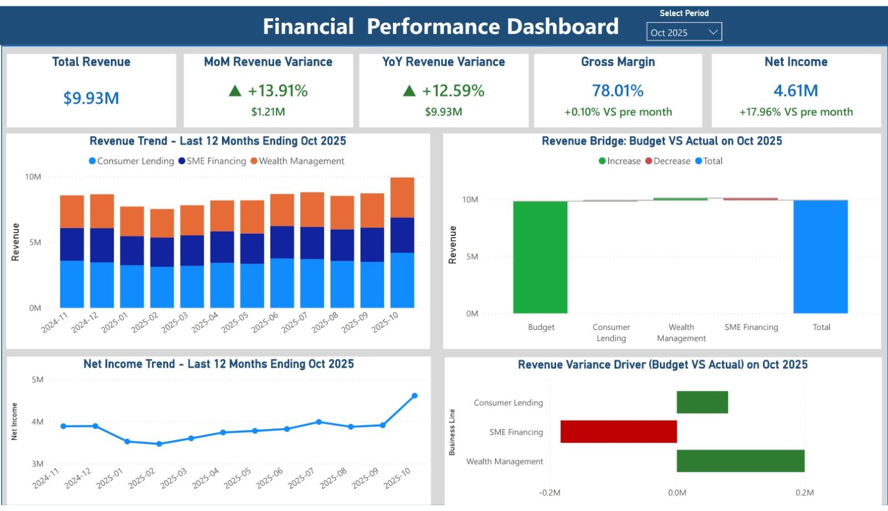
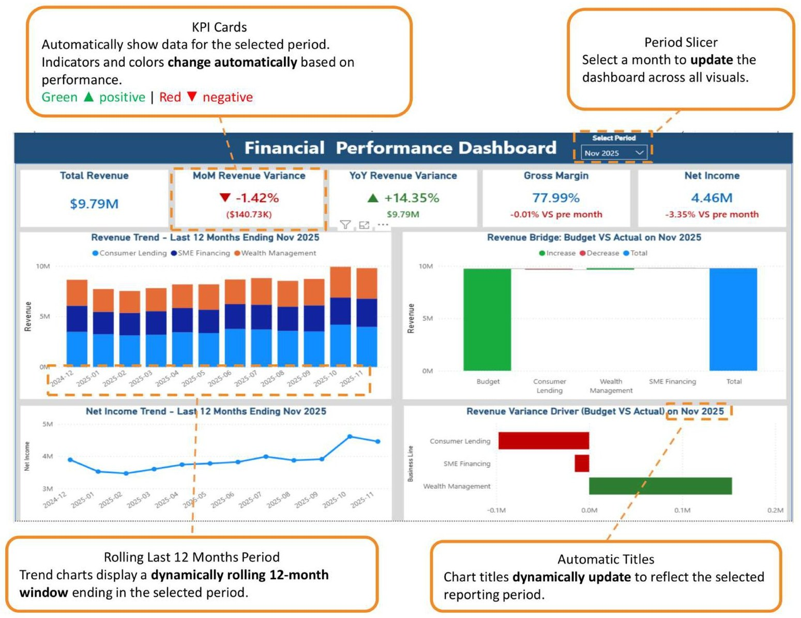

Power BI · Financial Analysis
This dashboard focuses on revenue performance by combining trend analysis, Budget vs. Actual comparisons, and business-line variance analysis. It helps stakeholders understand the drivers behind financial results, identify revenue opportunities, investigate unfavorable variances, and support data-driven business decisions.
Interactive slicers and automated DAX measures dynamically update all visuals, providing an efficient and scalable reporting experience.


Click either page to view it full size.